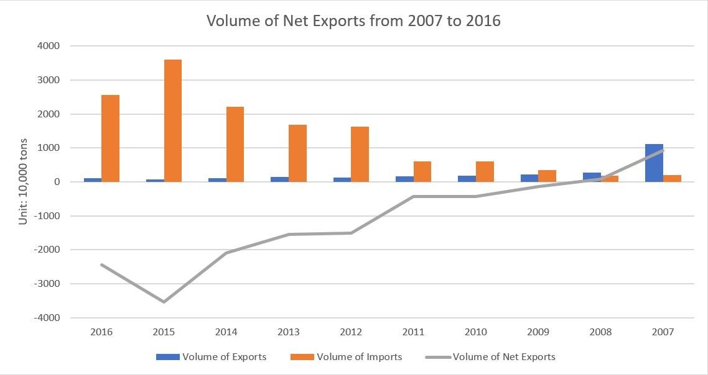

WANG Jiachen, Lisa
WANG Jiachen, Lisa
 Contact Number: (852) 6614 1592 |
Contact Number: (852) 6614 1592 |
 E-mail Address: wangjiachenlisa@gmail.com
E-mail Address: wangjiachenlisa@gmail.com
The Current Situation and Dilemma of China 's Grain Industry
After years of development, the food supply in China is unprecedentedly abundant and its safety is greatly enhanced. But at the same time, the drawbacks of the original grain support policy have become more apparent. At present, the phenomenon of "three highs and one low" has emerged in the grain supply and demand market in China. With more and more food production, imports and stocks, the self-sufficiency rate of grain is getting lower and lower.
Firstly, according to the two charts below, we can find the volume of grain production has increased a lot through past ten years. Wheat, rice and cereal are three main grains in China so that the data can probably represent the whole market. Besides, I found the output number of cereal is larger than rice and the rice one is also larger than wheat, which may because the most agricultural land in China are not available for planting wheat.

Moreover, the map following shows the number of grain production in 2017 by different provinces. As China divides into six mainly grain production area, we can easily find the northeast and south china can product more grains that mainly because of fertile soil and plenty of water.

Secondly, China's net import of food is growing. The combined bar and line chart shows that the grain import increased rapidly since 2007 which cause the number of net exports became larger and larger.
 Database:FAOSTATTherefore, we may think that because of the rise of food production and import, we should have higher food self-sufficiency rate. However, the fact is the rate has decreased over the years.

The map shows the global food self-sufficiency rate in 2015. Although there are some unknown data, we can discover that less than 20 percent countries in the world are able to reach the “over 100 percent” standard came up by the UN years ago.
The reason why the self-sufficiency rate has been declining year by year is mainly that we have turned a large amount of food into reserves in the warehouses received with the lowest purchase price and the temporary purchasing and storage policy, resulting in a reduction in the actual supply of the market. Once the reserve grain delivery is reduced or slowed down, the domestic grain-using enterprises will promptly replace them with cheaper imported grain, resulting in a rapid import growth and a consequent decline in self-sufficiency rate. It can be said that the decline of the self-sufficiency rate of grain in our country occurred along with the rapid increase of cereal reserve rate. At present, the food supply in our country is actually the most abundant period in history.
Since grain production increased significantly in recent years, the market has seen a stage of oversupply. In order to protect the interests of grain farmers, the government introduced a temporary policy of purchasing and storing reserves in addition to the minimum purchase price policy and purchased a large amount of grain from peasants. For example, in 2005, the state acquired more than 2.5 billion kilograms of grain from peasants at the lowest purchase price. By 2014, the state acquired 289.3 billion kilograms of peasants at a minimum purchase price and temporary purchasing and storage policy. The purchase amount in less than 10 years increased by 10.3 times. More and more acquisitions, the stock is also rapidly growing. By the end of 2004, the total inventory of grain commodities in the country was 309.4 billion kg. By July 2015, the total amount of grain inventories in our country exceeded 900 billion jin and the inventory at the end of the year exceeded 1 trillion jin. At present, the grain reserve rate in China has exceeded 80%, far exceeding the level of the reserve rate of 17% -18% stipulated by the World Food Organization.

As China is a country where have large population,if continue to increase grain output will bring about many problems. Only by improving existing policies and promoting normal market supply and demand can food security be ensured.